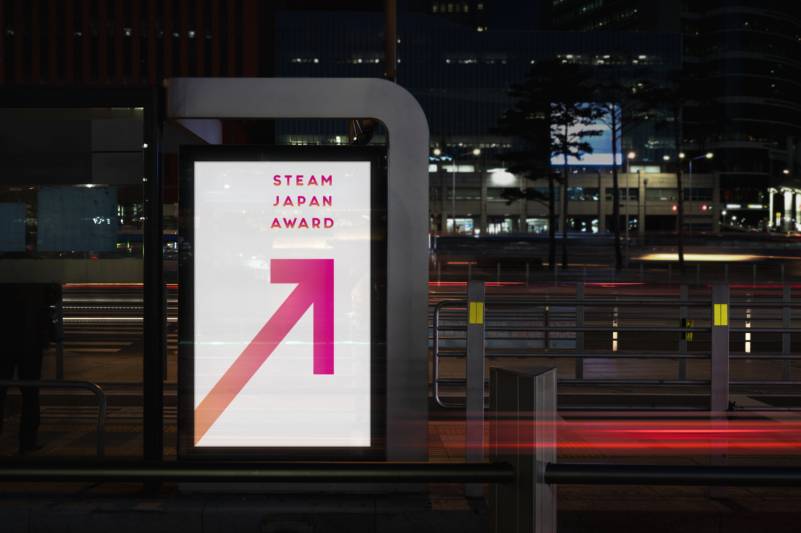

"Steam Japan Award"
The call for adapting to the changing times has long been echoed, and indeed, lately, we've reached a point where we're all demanded to embrace every update. Post-coronavirus, the essential qualities sought in the youth who will shape Japan's future are the ability to "accept change and forge ahead" and the capacity to "create anew". The era of feeling secure and safe by sticking to a certain path has come to an end, and we are transitioning to the next era. In Japan as well, a new generation is emerging, already accepting change, setting their own challenges, and solving them with their own skills.
With such sentiments in mind, we want to shine a spotlight on these individuals. Therefore, we are launching an initiative to commend middle and high school students who "set their own challenges, shape their ideas, and resolve them".
The call for adapting to the changing times has long been echoed, and indeed, lately, we've reached a point where we're all demanded to embrace every update. Post-coronavirus, the essential qualities sought in the youth who will shape Japan's future are the ability to "accept change and forge ahead" and the capacity to "create anew". The era of feeling secure and safe by sticking to a certain path has come to an end, and we are transitioning to the next era. In Japan as well, a new generation is emerging, already accepting change, setting their own challenges, and solving them with their own skills.
With such sentiments in mind, we want to shine a spotlight on these individuals. Therefore, we are launching an initiative to commend middle and high school students who "set their own challenges, shape their ideas, and resolve them".
"STEAM" stands for Science, Technology, Engineering, Arts, and Mathematics. It's an acronym created by combining the initial letters of these five words.

In this award, we will recognize individuals who set their own
challenges and create new changes, embodying what we call "STEAM talent"
— individuals proficient in Science, Technology, Engineering, Arts, and
Mathematics.


Brand Name:
Category:
Designer:
"SJA"
"Concept Design"
"Su Ziyue"
Feel free to explore my work and get in touch if you'd like to collaborate or discuss potential design opportunities. Let's bring your digital ideas to life together!